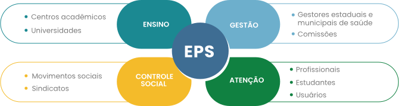

TÓPICO 2
ESTRATÉGIAS PARA PROMOVER UMA GESTÃO PARTICIPATIVA - PARTE 1
TÓPICO 2
ESTRATÉGIAS PARA PROMOVER UMA GESTÃO PARTICIPATIVA - PARTE 1
Ricardo Ceccim e Laura Feurerwerker, no artigo O Quadrilátero da Formação para a Área da Saúde: Ensino, Gestão, Atenção e Controle Social (2004), defendem que a EPS precisa, necessariamente, incluir esses quatro componentes na construção da gestão descentralizada do sistema de saúde. Assim, a EPS é uma estratégia de participação social, porque reconhece a importância de diferentes saberes e perspectivas na construção das mudanças necessárias, assim como busca promover com as instituições formadoras um diálogo que alcance a realidade do trabalho e reconstrua o hiato existente entre teoria e prática.
